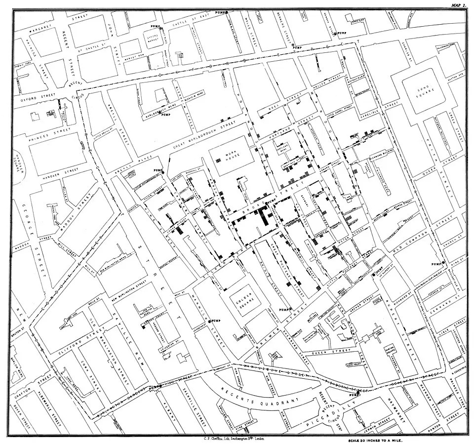

Chapter 2 · The Value of Information
The Value of Information: How Starbucks Turned Coffee Into a Data Business
A company that sells a four-dollar drink built one of the most valuable customer datasets in retail. This chapter asks the question the whole course rests on: when is information actually worth money, and when is it just expensive?
A company that sells a four-dollar drink built one of the most valuable customer datasets in retail. Before you can judge whether that was smart, you need a way to say what information is actually worth.
By the end of this chapter you should be able to:
- Distinguish data, information, knowledge, and wisdom, and explain why each step up the pyramid costs more and is worth more.
- Apply the value test: information has value when it helps somebody decide.
- Match information to the decision level it serves (operational, managerial, strategic) and say what each level needs.
- Explain how Starbucks turned identified purchases into a product, and which components carried it.
- Read a failed system (the inventory-counting tool) as a value-test failure rather than a technology embarrassment.
1Data, information, knowledge, wisdom
Chapter 1 defined an information system as five components, hardware, software, data, networks, and people, working together to collect data and deliver it to a user in a meaningful way. This chapter is about that last part: what turns collected data into something meaningful, and when it is worth the trouble. This chapter is about what information actually is, and makes information worth collecting and valuable to the end-user and organization.
Let's start by thinking about what information means in terms of what it is and what it is not. A useful framework for doing this is called the DIKW hierarchy (Data, Information, Knowledge, Wisdom).
There are four levels in the DIKW, each built from the one below it, and each one costs more to produce and is worth more once you have it.
- Data. A raw recorded fact with nothing attached: 62.
- Information. Data placed in context until it means something: 62 points on the midterm.
- Knowledge. Information joined with experience about what it implies: that is a low score for this class, and low scores predict trouble in the final.
- Wisdom. Knowing what to do about it, and whether to act at all: I should change how I study.
Two things move you up the DKIW pyramid, and they are worth naming because you will be doing both all quarter.
The first is connectedness: 62 becomes information only when it is connected to something else, a student, an exam, a scale. A number alone means nothing, and most of the work of a database, which you will meet in Week 7, is connecting facts to other facts.
The second is usefulness: each level is more useful than the last, because it is closer to somebody being able to do something.
The pyramid also runs backwards, which surprises people. Reaching the knowledge level usually reveals that you need data you do not have.
For example, imagine that you get a 62 on a midterm exam. The 62 is data. Compare your data with the class average of 78 and you have information: you are below the middle. From there, you form some knowledge, which might be that you are behind in the class and should study more before the final.
But, "study more" is not a decision you can act on because the score of 62 does not tell you what to study. So, you go back down the pyramid to collect more data: you ask the professor to review your exam and mark which question you got wrong. Now you have a new piece of information, that seven of your eleven wrong answers were on databases, and a much sharper piece of knowledge: you are not behind on everything, you are behind on one topic.
Real analysis is a similar loop up and down the DIKW pyramid, not a straight climb upward. Each time you reach the top, it sends you back down for something you did not know you needed.
2Information and decisions
In terms of the five components of an information system, you can think of information as what the data component becomes once somebody has done something to it. This means data is essential to an information system.
Taking that data up and down the DIKW pyramid often requires the other four components of an information system: hardware to capture the data, software to hold the rules, networks to move it to whoever needs it, and people to ask a question worth answering.
The people component is what the value of information is really about. For example, a company can own perfect data on excellent hardware and produce nothing from it, because nobody asked it anything.
Businesses use information for three things:
communication, telling people what happened;
process support, keeping the ordinary work running;
decision making, choosing among courses of action.
This chapter is mainly about the third, because that is where the question of value gets answered. Information is worth something when it helps with decision making. That includes confirming a decision: if a report could have told you to stop and instead tells you to go ahead, it has done real work, because you now act with more confidence than a guess. What has no value is information that could never have changed what you did, whatever it said. So before you can say whether a piece of information is valuable, you have to know which decision it is supposed to inform.
Companies make three kinds of decisions, and each kind needs different information:
A company typically makes three kinds of decisions at various levels. Each level needs different information at a different amount of detail, which is why one report cannot serve everyone.
- Level 1: operational decisions. Runs the day. These repeat constantly, follow rules, and are made by frontline staff or by software: how many people on shift Tuesday morning, when to reorder supplies. They need current, detailed information about right now.
- Level 2: managerial decisions. Runs the quarter. These recur on a cycle and are made by managers reading summaries: which locations are underperforming, whether a promotion earned back its cost. They need comparisons over time.
- Level 3: strategic decisions. Sets direction. These are rare, expensive to reverse, and made at the top: what business to be in, whether to build something new. They need broad information about years and markets, and they are never decided by information alone.
The three are discussed as levels because they sit at different heights in the organization. What moves between the levels runs both ways like the DIKW pyramid. Data flows up, getting summarized at every step. Decisions flow down: a strategic choice sets the boundaries the managerial level works inside, and those set the boundaries the operational level works inside.
The same fact is also worth different amounts at each level. Yesterday's sales at one store is essential to the store manager and meaningless to the executive; five years of category trends is the reverse. One report cannot serve everyone, which is the practical reason companies build more than one system.
Decisions also differ in a second way: whether anyone knows how to make them.
- Structured decisions. There is a known procedure, and software can run it without a human in the moment. Example: when a store's stock of oat milk drops below twenty cartons, the system reorders forty. Nobody decides that on the day, but a person decided the rule, and a person has to notice when twenty is the wrong number.
- Unstructured decisions. There is no formula, and nobody can write one. Information can inform the decision; judgment has to make it. Example: should the company bet its menu on cold drinks for the next three years? Sales data shows what is selling now, and a predictive model can estimate where the trend goes if nothing changes. But no report can say what customers will want in 2029, whether a competitor gets there first, or whether the brand can carry it. A person weighs all of that and decides, and is accountable for the result.
- Semi-structured decisions. Most real decisions. Part procedure, part judgment, which is why most systems are built to support a person rather than replace one. Example: a report ranks the ten best locations for a new store by foot traffic, rent, and a model's forecast of first-year sales. The procedure did the ranking. A person still picks, because the report does not know that the second-ranked site is next to a competitor that just closed, or that the landlord of the first one is impossible to work with. The system narrows the choice; the manager makes it.
Semi-structured decisions are where the current argument about AI is happening. Software has handled structured decisions for decades; the scheduling formula is not new. What is new is that AI systems now take on the middle category, and increasingly act on their own. An agentic AI system is given a goal rather than a script. It decides which steps to take, pulls information from wherever it can reach, and acts. Chapter 4 and Chapter 9 go into how that works.
For this chapter, what matters is what automation does to the value of information. When a person decides, bad information usually gets caught, because people notice when a number looks wrong. When a system decides and acts in the same second, nothing pauses to notice, and a wrong number becomes a wrong action at the speed of the network.
The more decisions a company automates, the more its outcomes rest on information nobody checked. That is why the phrase human in the loop keeps returning: somebody has to stay in a position to catch what an automated system cannot. Deciding where that person stands, and which decisions never get automated at all, is a management decision, and one you will be asked to make.
3The value test
All of that leads to the question this chapter exists to answer: what information is worth collecting? A company can collect almost anything. Storage is cheap, sensors are everywhere, and every system a business runs produces records as it goes. So how does anyone decide what is worth collecting, keeping, and paying attention to?
Information has business value when it helps somebody decide, including when it confirms a decision that was already leaning the right way. It does not have value because it is interesting, or accurate, or took effort to collect. It has value because some person or system decides better with it than without it, and that improvement is worth more than the information costs to produce.
Throughout this course, when you meet any information system, ask the same question first: what decision does this support? If the honest answer is none, the system is expensive decoration, and companies build expensive decoration constantly.
The value test sorts data that looks equally collectible into things worth having and things that are not. As an example, think about a coffee chain. Knowing the weather at every store is worth money, because weather changes what people drink, which changes what to staff and stock that morning. Logging every shot the espresso machines pull is worth money, because that data predicts a machine failing, and a machine that dies mid-rush wrecks the store's whole day. Knowing what share of customers wear hats is worth nothing. It is just as easy to collect, and just as accurate, and no decision anywhere in the company depends on it.
Try the quiz below to see if you can tell which data is worth collecting.
Six things your university could record about you as a student. Every one is easy to collect and would be perfectly accurate. Decide about each one before you see the answer.
Nothing here sorts by how easy or how accurate the data is. Every row is both. Work through all six and see what actually separates them.
One question remains: where does valuable information come from in the first place? Rarely from asking people. Almost always from recording what they were already doing.
The richest business data is usually generated as a side effect of an activity done for other reasons. For example, consider ordering a coffee. You have likely never filled out a survey about your coffee habits; your coffee habits record themselves during the act of ordering.
Data produced this way is cheap, honest (people lie on surveys, not at checkout), and continuous. When you evaluate any digital product this quarter, ask what by-product data it generates and who captures it. Free products, in particular, are usually paid for this way.
4Too much information; Not good enough information
Everything so far assumes information is scarce and that information can be valuable. For most of business history that was true. It is not true now, and the reversal is recent enough that most organizations have not adjusted to it.
Cloud computing has changed how data is collected and what information can be stored. Before cloud, which became a normal option for most companies after about 2010, when data storage and computing had to be bought, installed, and maintained in a building you owned, collecting data had an obvious cost, and somebody had to justify it. After cloud computing, renting storage by the hour removed that bottleneck to data collection. Nowadays, it is now cheaper for most companies to keep everything they collect than to collect data and decide what to get rid of. So companies keep everything.
The numbers around collecting data are hard to imagine. The world created and captured something like 149 zettabytes of data in 2024 and roughly 181 zettabytes in 2025, and the total is forecast to more than double again within a few years. A zettabyte is a trillion gigabytes, which still means nothing, so try it in objects. A DVD holds about 4.7 gigabytes. The data created in 2025 would fill roughly 38 trillion DVDs. Stacked in a single pile, those discs would reach about 46 million kilometers into space, which is 120 round trips to the Moon, or nearly a third of the way to the Sun. Put it on phones instead: at 128 gigabytes each, one year of the world's data would fill 1.4 trillion phones, about 175 for every person alive. And global volume has been doubling roughly every four years, so whatever pile you just pictured, picture it twice as tall by the time you graduate.
All of this data is not stacked, and it has to physically live somewhere. This is why data centers are the largest construction story in business right now. Worldwide spending on data center systems sat between roughly $140 billion and $236 billion for over a decade, then jumped to a forecast $582 billion in 2026. The four largest cloud companies alone have signaled something on the order of $400 billion of data center investment in 2026. Most of that is driven by AI, which needs enormous computing to train and run models, but AI is not the only reason. The other reason is that everything now records itself, and all of it is kept.
So what does this mean and what can you do about it? It's important to remember that twenty years ago the hard problem was getting data. Today the hard problems are deciding what data is worth collecting in the first place, finding the data in that actually matters, and knowing whether to trust it. The value test did not become less important when data got cheap. It became the only thing standing between a company and an expensive warehouse of numbers nobody reads. In essence, the value test is more important today than it ever was.
Remember: information is valuable when it helps a decision. There are exactly two ways it can fail to be valuable. Either too much information exists and nobody can find the value, or somebody finds the information and it cannot be used.
Too little information is when you do not have enough to act at all. The decision is in front of you and nothing you know settles it. Making plans with a friend, that is the text that just says "let's hang out Saturday." You do not know when, where, or whether to eat first, so you cannot leave the house. In business, it is a store manager who knows sales are down this month and has no idea which products, which days, or which customers, so there is nothing to fix.
Too much information is when the information you need exists but is buried in so much else that you cannot find it in time. You are not short of facts; you are short of the one that actually matters. Same friend, same Saturday, but now it is forty texts about things they might want to do, three screenshots of menus, and a playlist, and somewhere in the pile is the one line you needed, "I'm free after 6," which you scrolled past. In business, it is the Spotify problem from Chapter 1: a year of listening for 350 million people is far too much to hand to anyone and say "find what matters." The five remarkable days were in there. Somebody had to decide what "remarkable" meant before a machine could go looking.
Information fails a decision in two opposite ways. With too little, nothing you know settles the decision, so you cannot act. With too much, the piece you need exists but is buried in everything else, so you cannot find it in time. A business usually meets the second problem first, because collecting data has become cheap and deciding what to look for has not.
It is important to note that additional piece of data turned into information costs something to collect, clean, store, and read. Past some point you are paying more for the information than the better decision is worth. Finding that balance is a valuable skill, and will grow only more valuable as businesses collect more and more data.
Another important part of the value of information is the quality of the information, or information quality: whether the people who make decisions with the information can actually trust it. Information cannot help a decision if nobody believes it, and trust is not a feeling.
To check whether you have quality information, you can check, one at a time: Is the information you have accurate, complete, timely, consistent, and relevant to the decision in front of you?
The table below takes each of the five in turn, with the question a manager asks and what it looks like at a company when the answer is no.
Whether the people who make decisions with the information can trust it. Trust is not a feeling; it breaks down into five things you can check one at a time: is the information accurate, complete, timely, consistent, and relevant to the decision in front of you. A failure on any one can cancel the value of the other four.
| Dimension | The question a manager asks | What it looks like when it fails |
|---|---|---|
| Accuracy | Is the information correct? | A count says twelve and the real number is seven. Once people find that out, they stop trusting every other number from the same place and start checking by hand. |
| Completeness | Is any of it missing? | A customer survey went only to people who still use the product. The ones who quit, the ones you most need to hear from, are not in the data at all. |
| Timeliness | Does it arrive while the decision is still open? | A report about what happened Tuesday arrives Thursday. Every number in it is right, and every decision it could have helped has already been made. |
| Consistency | Does it agree with itself across systems? | Two departments report the same thing and get different totals. One may be right, but nobody knows which, so neither number gets used. |
| Relevance | Does it have anything to do with this decision? | A flawless report on something nobody is deciding about. Accurate, complete, on time, consistent, and worthless. |
Completeness Is any of it missing? A customer survey went only to people who still use the product. The ones who quit, the ones you most need to hear from, are not in the data at all.
Timeliness Does it arrive while the decision is still open? A report about what happened Tuesday arrives Thursday. Every number in it is right, and every decision it could have helped has already been made.
Consistency Does it agree with itself across systems? Two departments report the same thing and get different totals. One may be right, but nobody knows which, so neither number gets used.
Relevance Does it have anything to do with this decision? A flawless report on something nobody is deciding about. Accurate, complete, on time, consistent, and worthless. ---------------------------------------------------------------------------------------------------------------------------------------------------------------------------------------------------------------------------------------
Notice that only the first one is about numbers being wrong. The other four leave the numbers perfectly correct and still make them useless, which is why "is the data accurate?" is not the same question as "can we act on this?"
Five more situations, without the answers attached. Name the dimension that failed before you check.
Quality is the dimension companies most often assume they have. It is worth being able to name which one broke, because the fix is different for each.
5The value of information in the AI age
Everything in this chapter so far would have been true in 2010. So it is fair to ask whether AI changes any of it. The short answer is that AI does not change the value test at all. It raises the price of failing it.
5.1 A model is only as good as the data it can reach
Start with what an AI system in a business actually does. It does not know anything about your company. It reads whatever records you point it at and produces an answer in confident, fluent sentences. AI is only as smart as the data and information you give it. That last part is the problem, because a confident answer built from bad information looks exactly like a confident answer built from good information. Before AI, a wrong number on a report at least looked like a number, and a manager who knew the business could stop and ask where it came from. A model turns the wrong number into a paragraph, and the paragraph does not invite the question.
The data analyst and educator Jess Ramos says: your data strategy is your AI strategy. Most companies, she argues, are treating AI as a software problem, when what actually decides whether an AI feature works is the data underneath it.
Until a company fixes how it collects, connects, and protects its data, AI will amplify whatever problems it already has. Three of her points map directly onto this chapter.
- Stale data. At many companies the real records live in one system and the AI searches a separate copy, synced on a delay. The AI model then answers confidently from information that is out of date and has no way to know it. That is the timeliness dimension from section 4, and it is the one AI makes worst, because a stale answer delivered in a fluent paragraph gets acted on.
- Who can reach what. An AI model connected to company records can be tricked into handing over information it should not, by an instruction hidden inside an ordinary-looking input such as a form field or a support ticket. This is called prompt injection, and the defense is not a better prompt. It is the same discipline this chapter has been describing: decide which records are sensitive, label them, and block anyone, human or machine, without permission from reading them. Ramos adds that every action an AI takes should be logged somewhere that cannot be edited afterwards, so that when something goes wrong, the trail is still there.
- The load. A normal new feature barely changes how hard a database works. An AI feature adds a new kind of load, because a model asks and receives many questions to answer one, and an AI agent that plans and checks its own steps multiplies that again. A system that handled the demo with five people in a room can fall over when real users arrive. Section 4's point about volume returns here from the other direction: AI does not just produce more information, it consumes it far faster than anything a company has run before.
5.2 What this means for the value test
Remember: information is worth collecting when it helps with decision making. AI changes who, or what, is making the decision, and how fast the information gets used, but it does not change the test. If anything, it makes two of the chapter's ideas sharper.
First, remember the by-product rule from section 3: the most useful data a company has is often collected for some other reason. With AI, that rule matters more than ever. An AI model can only learn from what a company already wrote down. So a decision somebody made years ago about what to record, probably without thinking much about it, now decides what the company's AI can and cannot do. Starbucks started putting a name on every purchase in 2011. Eight years later, that pile of names and purchases is what made its AI possible. A company that never wrote the facts down cannot go back and get them, no matter how much money it has.
Second, the five quality questions from section 4 are no longer just a checklist. They become a safety check. When a person reads a report, they can sometimes tell that a number looks wrong and stop. An AI cannot tell, and it will not warn you. It will use the bad number and give you a confident answer built on it. So the questions this chapter taught you to ask, is the information accurate, complete, on time, consistent, and about the right thing, are now the questions that decide whether you can trust an AI with a real decision at all. Answering them is a manager's job, not an engineer's, and it is why this book keeps coming back to data.
Overall, as we go more into the AI era, it's important to remember that an AI system only knows what its data lets it see, and it sounds just as confident whether that data is current, complete, and protected or not. So the decisions that decide whether an AI can be trusted are really decisions about data: what got recorded, how up to date it is, who is allowed to reach it, and whether the system can handle the demand. AI raises the stakes of the value test. It does not replace it.
6Two mini-cases
The rest of this chapter illustrates the core ideas introduced in the previous sections. It does so through two mini-cases, and then a broader case. As you read each one, hold the same four questions: what was the data, what turned it into information, what decision did it help make, and what was that worth?
6.1 Mini-case 1 · 1854: the pump on Broad Street
In the late summer of 1854, cholera tore through the Soho district of London, killing hundreds of people in a few square blocks. The era's medical consensus blamed miasma, which is essentially toxic air rising from filth. A neighborhood fighting against bad air was hard to do in 1854.
A physician named John Snow didn't think so. He suspected the disease traveled in water, not air. So, he did something that now looks obvious, but, back then, it was radical: he collected the addresses of the people who died of miasma and drew them on a street map, each death a black mark.
The marks eventually piled up around a single public water pump on Broad Street. Data eventually became information: not "many people are dying," which everyone knew, but "the deaths cluster around this pump," which nobody could see until it was visualized. Snow took the map to the neighborhood board and persuaded them to shut the well off. The decision was cheap, specific, and only possible because the information existed in a form a committee could grasp in one look.

John Snow, from On the Mode of Communication of Cholera, second edition, 1855. Lithograph by C. F. Cheffins, London. Public domain.
One interesting note is that there were a few oddities that needed further investigation. For example, a brewery sat near the infected well, but its workers were mysteriously spared; it turned out the brewery had its own well. Also, a widow from a town miles away died of the same outbreak; it turned out she had liked the Broad Street water's taste so much she had it delivered.
The anomalies did not weaken the pattern. Investigated properly, they confirmed it. Learning to chase the observation that does not fit, rather than discard it, takes critical thinking, and that skill will forever be valuable.
Show the answer
The decision was whether to shut off the Broad Street pump, and the parish board made it on 8 September. The register alone could not have helped, because it listed deaths by name and date, not by distance from a pump; the map turned the same data into information about location, and the brewery explained the exceptions. The worth is the deaths that did not happen after the handle came off, though honesty requires saying the outbreak was already fading, so nobody can put a number on it. The value of information is easy to see and hard to count, and that will be true of every case in this book.
6.2 Mini-case 2 · 2026: the fire on the ridge
On the afternoon of Saturday 22 August 2026, a fire started in the hills northwest of Reno, Nevada, where Prof. Califf's father lives. It moved about four miles in three hours. By Monday it had burned more than fifteen thousand acres, destroyed dozens of homes, and put tens of thousands of people under evacuation orders or warnings.
Prof. Califf was there. From a home's window, you could see the fire. That is a vivid piece of raw data and it is almost useless. It is too little information. An orange glow on a ridge tells you something is burning somewhere in that direction. It does not tell you how far away it is, which way it is moving, how fast, or whether the street you live on is inside the line. You cannot make a decision with it. You can only be frightened by it.
What Prof. Califf had instead was a map on his phone. The map was from a company called Perimeter Map, a real-time collaborative map platform for public safety. The map visualized a set of shaded zones drawn over the streets of Reno, and updated as new information came in. Yellow meant be ready to. Red meant leave now. Everything else meant stay put. And a blue dot showed him where he was standing relative to all of it.
![A phone screenshot of an evacuation map during the Hawk Fire, taken at 10:54 at night. The burned
area is a solid red shape near the center. Around it, a large region is shaded red and labeled
repeatedly Evacuation Area, GO NOW. Beyond that, a band of yellow zones is labeled Evacuation Warning,
GET SET. Road closure symbols sit along the highway running through the red zone. Reno is labeled to the
right, outside both bands. A blue dot marking the viewer's own location sits south east of the shaded
areas, near Caughlin Ranch, outside every zone.](hawk-fire-perimeter-map.png)
Screenshot taken during the Hawk Fire, August 2026. Perimeter Map, base map by Mapbox.
The obvious argument for that map is that it saves the people who would otherwise not know to leave. The better argument runs the other way. Without it, everybody with a view of the ridge leaves at once. The roads out of a metropolitan area fill with a hundred thousand people who were never in danger, and the ones who had to move cannot get through. Most of what that map did on that Saturday was tell the overwhelming majority of Reno to stay exactly where they were, which is worth more than it sounds and is invisible if it works.
The fire map is essentially the same as Snow's map, a hundred and seventy years later and on the internet. Somebody collected observations, aircraft tracks and satellite passes and crews on the ground, and put them in a form a frightened person could read in one look. Data became information at the moment it was drawn over a street residents knew.
It is worth saying plainly that this one was not a clean win. One woman, eighty-three years old, died of injuries from the fire. Better information does not mean everybody gets out, and a map on a phone only helps the people who have the phone, the signal, and the habit of checking. Some are unfortunately left out.
Show the answer
The data was the fire's perimeter and the evacuation zones, as fire crews and the county recorded them, plus one more fact from the phone itself: where the viewer was standing. What turned it into information was the map: shading the zones over streets he knew and putting a blue dot on his own location, so the fire became a question about him and not a glow on a ridge. The decision it helped make was whether to leave, and he stayed, because he was outside every zone and the fire was not moving his way. What was that worth? A night's sleep and a car that stayed off the road, which sounds small until you count it across tens of thousands of people. Most of the map's value was in the people it told to stay put, because a road full of people who did not need to leave is what blocks the people who do.
7Main case · Starbucks: the app that turned coffee into information
Now that you have some background of the concepts around the value of information, let's go through the main case of Starbucks.
7.1 The company behind the app
Starbucks opened as a single Seattle coffee bean shop in 1971 and now operates roughly 40,000 stores across more than 80 markets. For most of its history, the company's story was about good coffee and a "third place" between home and work where people wanted to sit.
Today, Starbucks has a Rewards program through its app. The Rewards program includes about 34.2 million active U.S. members, and those members account for roughly 60 percent of company-operated U.S. revenue, and Mobile Order & Pay handles over 35 percent of U.S. transactions.
The following case is about the app that made that possible. From your side it is a way to skip the line and earn a free drink. From the company's side it is the thing that attaches your name to every purchase, and that one column is what the rest of this case is about: why Starbucks built the app, what the information it collects is worth, what the company did with that information once it had ten years of it, and what happened when it tried to collect information a different way and got it wrong.
Photograph via Wikimedia Commons.
Behind those numbers sits an analytics platform the company calls Deep Brew, which processes on the order of 100 million transactions a week.
Members hand Starbucks a complete record of what they buy, when, where, and how often. In return they get free drinks, shorter lines, and offers built for them personally. Starbucks is not unusually generous; it has concluded that the information is worth more than the free coffee costs. Whether that conclusion is right, and how a company could possibly know, is this chapter.
The Starbucks case shows how a physical product with thin margins (coffee) with an information layer on top of it became the growth engine. If you can explain why a coffee company employs data scientists, you understand what this course is about.
7.2 What the Rewards app is actually for: a name on every purchase
Everything in this case depends on one thing: the company knowing who is buying. That is the app's real job. From your side, the Starbucks app is a way to order ahead, pay with your phone, and collect stars toward a free drink. From the company's side, every one of those taps attaches your name to a purchase that used to be anonymous.
To see why that matters, let's start with a purchase made without the app. Here is a cash sale at the register, as the system records it.
| store | time | item | size | price | customer |
|---|---|---|---|---|---|
| 412 | 2026-02-17 08:14 | Latte | Grande | 5.45 | — |
The row above, one latte bought with cash, is definitely worth something. It tells the company that store 412 sold a grande latte on a Tuesday morning for $5.45, which is enough data to reorder milk and staff the shift. It is a perfectly good operational record and it is useless for anything else, because the last column is empty.
You cannot tell whether that customer came yesterday, whether she will come tomorrow, or whether she is the same person who bought one every weekday for two years and then stopped. The individual, the unit personalization needs, is invisible in cash.
This is the problem the app was built to solve, and it is worth being honest about the move to digital, because it is essentially the same system behind almost every free or convenient digital service you use.
The customer gets real value: order ahead, skip the line, save a favorite drink, earn stars toward a free one. The company gets something it could not buy at any price, which is a name attached to every purchase. Nobody is being tricked (or are they?). Both sides get what they came for, and only one side gets an asset that compounds.
Let's look at the same customer who orders more coffee, only does so through the Rewards app.
| member | store | time | item | customization | channel | price | stars |
|---|---|---|---|---|---|---|---|
| m_88213 | 412 | 2026-02-17 08:14 | Grande latte | oat milk, extra shot | mobile order | 6.25 | 13 |
| m_88213 | 412 | 2026-02-18 08:09 | Grande latte | oat milk, extra shot | mobile order | 6.25 | 13 |
| m_88213 | 412 | 2026-02-19 08:11 | Grande latte | oat milk, extra shot | mobile order | 6.25 | 13 |
| m_88213 | 109 | 2026-02-21 14:32 | Venti cold brew | — | in store | 5.75 | 12 |
| m_88213 | 412 | 2026-02-24 08:07 | Grande latte | oat milk, extra shot | mobile order | 6.25 | 13 |
m_88213 412 2026-02-18 08:09 Grande latte oat milk, extra shot mobile order 6.25 13
m_88213 412 2026-02-19 08:11 Grande latte oat milk, extra shot mobile order 6.25 13
m_88213 109 2026-02-21 14:32 Venti cold brew --- in store 5.75 12
m_88213 412 2026-02-24 08:07 Grande latte oat milk, extra shot mobile order 6.25 13 -------------------------------------------------------------------------------------------------------------
One column changed, and everything downstream of it changed with it. Any single row here is still just data: somebody bought a latte. But because the rows can now be connected to each other, a pattern appears that no single row contains. Same member, same store, same drink, three mornings running, all before half past eight. That is information. Add experience about what the pattern means, that weekday morning regulars are the most valuable customers a coffee company has and the easiest to lose quietly, and you have knowledge, the level where somebody can act.
Look at what those columns make possible, one at a time. The member column is the whole game: it lets every other column be connected across visits, and without it none of what follows exists. Time plus store says she is a weekday morning regular at one store, so an offer should arrive Sunday night rather than Tuesday at noon, and store 412 should be staffed for her and the several hundred people like her. Customization is the difference between knowing she bought a latte and knowing she buys oat milk every time, which decides what that store keeps in the fridge and makes any promotion involving dairy irrelevant to her. Channel says she orders ahead, so her drink can be slotted into the queue before she arrives. Price says she reliably spends about a dollar above the base drink, which is worth knowing before anyone offers her a discount she did not need. And Saturday afternoon at a different store on a cold brew is the row that says her weekday pattern is a routine rather than a preference, which is the sort of distinction that separates a useful offer from an annoying one.
Notice also what the rows still do not contain. Not why she came, not whether she was alone, not whether the fourth latte was for a coworker. The system has an account, not a person, which is a limitation and data that the Starbucks doesn't have. There is still a limit here.
So, what's really happening here? The interface that serves the customer is the instrument that collects the data.
7.3 Three levels, one pool of data
Now think about what Starbucks can do with the rows we just saw, once they have a name on them, at each of the three decision levels from section 2.
- Level 1, operational decisions. The register knows a member ordered a grande latte at 8:14 on a Tuesday, and so did four hundred other members at that store last Tuesday. Software uses that history to predict how busy 8:14 will be next Tuesday, and from that decides how many people to put on shift and what order to make the drinks in. The company's SmartQueue system, in test locations, got about 80 percent of cafe orders handed off in under four minutes.
- Level 2, managerial decisions. Add up the rows by store and by offer. A district manager can see that one location's members are buying less than they did last quarter, or that a two-for-one promotion brought in members who then never came back. Store comparisons and promotion analyses decide where attention goes and which offers earned back what they cost.
- Level 3, strategic decisions. Add up every row in the country. Cold beverages reached about 78 percent of U.S. beverage sales in 2025, a fact nobody can see at a register and everybody can see in the total, and in February 2025 the company cut roughly 30 percent of its menu items to simplify operations around what people actually buy.
Notice what that means for the system. The same rows served all three levels. The barista's queue, the district manager's store report, and the CEO's menu decision all drew on one shared pool of data, summarized in three different amounts of detail. That is what "management information system" means in practice, and it is why a data quality problem at the bottom poisons decisions all the way up: a register that records the wrong drink misleads the shift plan, the store report, and eventually the menu. Nothing in that arrangement is a technical achievement. It is a set of management decisions about what to measure, who sees which version of it, and what each level is allowed to decide on the strength of it.
7.4 What the information is worth, and what Starbucks built to get more of it: Deep Brew
So what is a name on every purchase actually worth? Starbucks knows that members account for roughly 60 percent of company-operated U.S. revenue. The rows with a name on them are not a side project. They are most of the business, and every one of the three decision levels now is based on the members. That is the value test answered with a number, and it explains what Starbucks did with the data next.
In 2019 the company built an AI system to get more decisions out of the same pool of data. The AI system was called Deep Brew. Deep Brew is more of a prediction machine. It uses member data to look at what happened before and estimates what will happen next, and then something acts on the estimate. For example, it asks questions like: Which offer is this member most likely to use? How many people will walk on Tuesday at eight? Which espresso machine is about to break? Nobody types a question, and nothing writes a reply. It just quietly makes thousands of small guesses a day and hands them to whoever, or whatever, acts on them.
Now notice the dates in the Starbucks story. The app launched in 2009, the loyalty program in 2011. Then Deep Brew in 2019. That gap is not a delay. It is the reason the AI works.
An AI model that decides which offer to send you has to learn from something, and what it learns from is years of purchases attached to identified people. In 2011 Starbucks did not have that. By 2019 it had close to a decade of it, at a scale of roughly 100 million transactions a week. The order matters more than the technology does: the data collection came first, and the AI became possible because the data was already there.
This is one reason AI is taking off in 2026. Companies spent the last twenty years collecting more data than they knew what to do with, and AI is championed as the first tool that can (potentially) find value in most of it. The other reasons are that the models themselves got far better after 2017, and that renting the computers to run them got cheap. But without the data, neither of those would matter to a business, which is why the decision about what to record still comes first.
That sequence is not unique to coffee. Nearly every company now described as an AI company (or at least AI-adjacent) spent the previous decade building the thing that records what its customers do, usually while calling it something else. Spotify called it an app; every play you made since 2008 was a row. Netflix called it a watch history; Domino's called it a tracker. Amazon called it a shopping cart. Walmart called it Retail Link. None of them set out to build an AI company. They set out to record what customers did, and the AI arrived when the record was big enough.
7.5 What Deep Brew decides
So, back to Deep Brew. Let's run the value test on Deep Brew itself. It is worth what it is because of the decisions it changes, and there are three kinds.
Which offer you see. Open the Starbucks app and the offer on the home screen is not the same one your roommate sees. Deep Brew looked at your purchase history, when you usually come in, where you are, and even the weather, and picked the offer you are most likely to use. Before the app and Deep Brew there was no such decision, because the company could not tell one customer from another. The data collection turned into information made the decision possible, and the decision is worth whatever extra you buy because of it.
How many people to put on shift. Every store used to staff by the manager's feel for a Tuesday. Now the system looks at what happened on the last fifty Tuesdays at that store and predicts how busy 8:14 will be. Too many baristas is wasted wages; too few is a line out the door and a customer who does not come back. Getting that guess right, store by store, is worth more than any single offer.
What to make first. When a cafe order, a drive-through order, and a mobile order all want the one espresso bar at the same moment, something has to decide the sequence. That used to be whoever shouted loudest. SmartQueue makes the call, which is why, in test stores, most cafe orders were handed off in under four minutes.
7.6 What's next: getting more out of the same data
A company that has spent fifteen years building a pile of data on coffee purchases has three ways to make that pile worth more, and Starbucks is trying all three.
Ask new questions. The rows have not changed, but the questions keep multiplying. The same purchase history that picks your offer can now predict which members are about to stop coming in, so the company can send them something before they go rather than after. Every new question is a new decision the old data can help with, at almost no new cost, which is the by-product rule paying out again. However, remember that in the Spotfy case, researchers used AI to help with novelty. This may be a limitation of AI and require more cultural nuance involved in human coffee drinkers.
Make the answers better. More data does not help if it is wrong or late, and much of the company's recent work is unglamorous: getting store-level numbers in faster, reconciling what the app says with what the register says, so that the Tuesday staffing prediction is built on last Tuesday and not on last month. That is the quality section of this chapter, applied one store at a time.
Add the new kind of AI on top. Since 2024 the company has begun adding generative tools, the chatbot kind, built on models it rents rather than owns. Green Dot Assist answers baristas' procedural questions on an in-store tablet in more than twenty languages, and it was tried in 35 stores before it went wider. Notice what it runs on: Starbucks's own recipes, procedures, and records. The rented model is the same one any competitor can rent. What makes it useful at Starbucks is, once again, the data underneath.
Which raises the question the rest of this chapter turns to. The value of all this rests on customers continuing to scan, and customers scan because they trust what the company does with the rows. Section 8 is about what that trust costs, and what happens when a company collects information in a way that customers did not agree to.
7.7 When the information is not good enough: NomadGo
Everything above is Starbucks using information well. Now watch the same company reach for more of it and get it wrong.
In September 2025, Starbucks announced an AI inventory system, called Automated Counting internally, across more than 11,000 company-operated stores in North America. Built with the Seattle-area startup NomadGo, it used a tablet camera and software trained to recognize products. Point the tablet at a shelf and the counts appear on the screen, hovering over each item. The announcement claimed counts up to eight times faster than by hand and 99 percent accuracy, and said the technology had been tested for several years before deployment.

Credit: NomadGo and Starbucks.
Notice what the pitch was about: more counts, more often, at less cost. That is a quantity argument. The one quality claim, 99 percent accuracy, was the vendor's own figure, measured in conditions the vendor chose. Nobody had established what the accuracy would be in a dim cooler full of lookalike cartons, which is where the system was about to spend its working life.
The counting system did not work. Baristas and managers reported that it confused similar products, missed items entirely, and contributed to both shortages and overstocking, the opposite of the problem it was bought to solve. Reuters documented persistent miscounting by February 2026. Asked about the complaints, Starbucks told Reuters the tool had improved product availability. On 19 May 2026, nine months into the rollout, Starbucks retired it in a one-line internal newsletter and went back to counting by hand. The announcement and its promotional video were removed from the company's website.
Three ideas from the first half of this chapter explain the failure, and the order matters, because each one caused the next.
How the NomadGo counting system failed, in order
| Failure What the cameras and model did Which idea it broke What that looked like in a store |
2 Produced eight times more counts than manual counting did, all of them suspect. Too much information The replenishment order goes out on the wrong number, no two percent arrives, and instead of one weekly count somebody trusted, the store now has dozens of counts to verify by hand.
3 Changed no decisions, while every part of it kept costing money. The value test, failing on both halves The shift supervisor stops opening the app. Cameras, software license, training, and rechecking labor keep billing every week until somebody in Seattle decides to stop. ----------------------------------------------------------------------------------------------------------------------------------------------------------------------------------------------------------------------------------------------------------------------------------------------------------------------------------
That failure was predictable: telling whole milk from two percent from oat milk on a dim shelf at an angle is a known weak spot of computer vision, and a milk cooler is close to a worst case for it. What was not predictable is a management decision. Starbucks knew how to test carefully; it had just tried Green Dot Assist in 35 stores before expanding. Somebody chose eleven thousand stores instead of fifty, accepted a vendor's accuracy figure as the standard, and decided how long to keep paying while baristas rechecked by hand. The technology decided whether the counts were right. People decided how much that mattered.
It is August 2025. The rollout has not happened yet, and you are in the room. Here are five proposals. For each one, decide whether it would have changed how this ended. Two of them are things Starbucks actually did.
Some of these are about the technology and some are about people. Work through all five and see which kind actually protects you.
7.8 The five components at Starbucks
Now that you have seen the whole system since around 2011, here it is as the five components. Look at where the value lived and where the failure lived. The value was in the data: fifteen years of purchases with a name attached. The failure was also in the data: counts that were wrong, produced by software that could not tell one carton from another, and it broke the system at the people, when a shift supervisor stopped opening the app. Same component, opposite result, and the difference was whether the information was good enough to make a decision with.
| Component At Starbucks What breaks if it fails In the NomadGo failure |
Software The app, Deep Brew models, SmartQueue, scheduling systems Wrong offers, drinks made in the wrong order, staffing that misses the rush Failed. The model could not tell one carton from another on a dim shelf at an angle.
Data 100M+ weekly transactions, member histories, shot logs, weather Garbage in: every level of decision inherits the error Failed as a result. Counts that were wrong went out to the ordering system as if they were right.
Networks Store connectivity, and the rented computing that carries orders and machine readings Mobile ordering dies, and a third of U.S. transactions with it Worked. The bad counts arrived everywhere on time.
People Baristas working the queue, analysts reading the output, executives betting the menu Nobody trusts the numbers, so nobody acts on them, and the system is decoration Where it finally broke. Supervisors stopped opening the app, and nine months later somebody in Seattle stopped paying for it. ------------------------------------------------------------------------------------------------------------------------------------------------------------------------------------------------------------------------------------------------------------------------------------------------------------------------
The weakest component rule from Chapter 1 applies with no modification. The sophistication of Deep Brew buys nothing if the store's network is down, and perfect uptime buys nothing if the model behind the offers is learning from corrupted data. You just watched the rule operate: two components failed, three worked perfectly, and the counting system still died.
7.9 What a business manager takes from this chapter
Go back to the question this chapter opened with. Information is worth something when it helps somebody decide, and its value is the size of the decision it helped. Everything in this chapter is that one test applied at different scales:
Snow had a few hundred addresses and a street map, and the decision was whether to take the handle off a pump.
A phone in Reno had a shaded polygon, and the decision was whether one family got in the car.
Starbucks has a hundred million transactions a week, and the decisions are where to put a store, what to make before you order it, and what to say to you on a Tuesday morning.
Different centuries, different budgets, same test. Four things follow from it, and each one is a decision you will be asked to make.
Decide what to record before you know why. Starbucks put a name on every purchase in 2011 and got an AI platform out of it in 2019. Snow's map was built from death registers the parish kept for its own reasons, decades before anyone thought to plot them. Nobody can tell you in advance which recorded fact will be worth the most; what you can do is make sure the facts get kept. When somebody proposes a system, ask what it will record and what it will throw away, because the second list is the one you cannot fix later.
Ask "which decision?" before "how much data?" The NomadGo cameras produced eight times more counts than people did, and the counts helped no decision, because nobody could trust them. More is not the goal. The goal is a number someone will act on. When a vendor's pitch is entirely about volume and speed, ask the quality question they skipped, and ask who measured the accuracy figure and under what conditions.
Treat information quality as a management job, not a technical one. A wrong count in a cooler misled the reorder, the store report, and eventually the menu, because the same rows feed every level. Deciding what gets measured, who checks it, and what "accurate enough" means for each decision is not something the software does. It is something you do, and the whole system inherits your answer.
Remember that the information belongs to a person. Every named row at Starbucks is somebody who scanned because they trusted what the company would do with it. The value of the whole system rests on that trust continuing.
- Data becomes information when somebody does something to it, and doing something takes the other four components.
- Information is worth collecting when it helps somebody decide. If it could never have affected any decision, the collection is a cost with no return.
- Different decisions need different information. The register needs today's count; the strategy meeting needs the trend across a hundred stores.
- Starbucks' advantage was not coffee and not an app. It was attaching a name to every purchase and building on years of that record.
- AI does not change the value test; it raises the stakes. A model can only learn from what was recorded, and it will use a bad number as confidently as a good one.
- Killing a system that fails the value test is management, not failure. The embarrassment is keeping it.
8Summary and vocabulary
- Data
- Raw recorded facts; a transaction line.
- Information
- Data given context so that it helps somebody decide.
- The value test
- Information is worth collecting when it helps somebody decide, including by confirming a decision, and the improvement is worth what the information costs to produce.
- Operational decision
- Runs the day; frequent, rule-following, often automated.
- Managerial decision
- Runs the quarter; cyclical, made from summaries.
- Strategic decision
- Sets direction; rare, hard to reverse, judgment-heavy.
- Structured decision
- Has a known procedure a system can execute.
- Unstructured decision
- No formula; information supports but judgment decides.
- Wisdom
- Knowing what to do with knowledge, and whether to act at all.
- Knowledge
- Information joined with the experience to act on it well.
- Information quality
- Accuracy, completeness, timeliness, consistency, relevance; failure on one dimension can zero the rest.
- By-product data
- Data generated as a side effect of ordinary activity, often more valuable than the activity itself.
- Too much information
- When the useful piece exists but is buried in so much else that nobody finds it in time.
- Connectedness
- Linking a fact to other facts until it means something; what moves data up to information.
- Semi-structured decision
- Part procedure, part judgment. Most real decisions, and the reason most systems support a person rather than replace one.
- Prompt injection
- Tricking an AI that is connected to company records into handing over information it should not, using an instruction hidden in an ordinary-looking input such as a form field or a support ticket.
- Human in the loop
- Keeping a person positioned to catch what an automated system cannot, before its output becomes an action.
Starbucks knew its inventory counts were unreliable, so in 2025 it piloted NomadGo, a phone-based system that scanned shelves and counted stock automatically. The pilot ran about eight months. In May 2026 Starbucks killed it.
Was cancelling NomadGo a technology failure, or a correct decision that the information was not worth what it cost?
Pick one and write the strongest single reason for it. Consider what decision a better inventory count would actually have changed.
Find someone who picked the other one. Each of you gets ninety seconds to make your case without interruption.
We will hear one pair who disagreed and see whether either moved.
Green: after drafting your own answer, ask an AI to argue against it and press on your weakest claim, sparring partner mode, before you present. Red: submitting or reading out an AI-written answer. The Wednesday discussion grades your reasoning, and everyone in the room can tell the difference.
9Discussion questions
None of these get handed in. On Wednesday you run the discussion and I steer it, which means the class is only as good as what you walk in with. Read the chapter, pick the question you have the strongest opinion about, and be ready to say it first.
- Three cases, four and a half thousand years apart: a shipping log from Giza, a map of Soho, a phone screen in Reno. Each one changed a decision. What do all three have in common that a report nobody acts on does not? Apply
- Your employer offers to install sensors that record everything happening in the building: who is in which room, how long meetings run, which equipment is used and when. Storage is nearly free. Name two things you would collect and two you would refuse, and defend the refusals, given that only a small fraction of collected data is ever analyzed. Apply
- Pick a company or organization you know from the inside. Name one operational decision, one managerial decision, and one strategic decision it makes, and the information each one needs. Would a single dataset serve all three, or do they need different things? Analyze
- Starbucks launched its app in 2009 and its AI platform in 2019, and the gap is the reason the AI worked. Pick a company that has announced an AI initiative recently and ask what it spent the previous ten years collecting. If the answer is nothing much, what should you expect from the announcement? Systems
- The same personalization machinery that suggests your usual order is used elsewhere to decide who sees a gambling promotion at two in the morning. Nothing about the technology changes. Where is the line, and who should be drawing it: the company, the regulator, or the person being personalized at? Ethics
10From lecture to lab
This week's lab, Lab 2: Excel Basics: Meeting the Client, opens the Cascadia Outfitters engagement. You will compute numbers for a real client for the first time, which makes this chapter's question immediate: which numbers are worth computing at all, and what decision does each one change?
Go to Lab 2 →11Sources and further reading
- Jess Ramos, "Why We Must Focus on the Data," Big Data Energy (Substack), 3 September 2026, for the argument that a company's data strategy is its AI strategy, and for the three problems in section 5: stale data, prompt injection and data-layer security, and AI workload. Ramos writes for practitioners and the post promotes a vendor video series; the arguments in section 5 are hers, the mapping onto this chapter's concepts is ours.
- NomadGo and Starbucks announcement, September 3, 2025, for the deployment scale, the eight-times-faster claim, the 99 percent accuracy figure, and the statement that the technology had been tested in a sandbox for several years.
- Reuters reporting, May 2026, on the retirement of automated counting, the reported miscounting and mislabeling, the shortages and overstocking, and the peppermint syrup bottle in the launch video.
- IDC and Statista data volume estimates (149 zettabytes created in 2024, roughly 181 in 2025, with global volume doubling about every four years) and the widely cited estimate that only two to three percent of collected data is ever analyzed.
- Gartner worldwide data center systems spending forecasts, and JLL, 2026 Global Data Center Market Outlook, for the buildout figures and the AI share of data center workloads.
- Starbucks Stories & News, How AI-powered automated counting is brewing a better experience at Starbucks (September 2025): the deployment announcement, count frequency, and labor savings claims.
- Canopy, Starbucks Deep Brew AI: How Technology Makes Coffee Human (updated May 2026): the May 19, 2026 NomadGo retirement, the milk miscounting failure mode, and Q2 FY2026 comparable sales figures.
- AI Plus Info, AI & Data-Driven Starbucks: Deep Brew: SmartQueue, Green Dot Assist, and FlavorGPT program details.
- Deep Research Global, Starbucks SWOT Analysis (2026): Rewards membership and revenue-share figures.
- Companies History, Starbucks Target Market 2026: Mobile Order & Pay share, cold beverage mix, and the February 2025 menu reduction.
- Future Stores / WBR, How Starbucks Is Using AI to Better Serve Its Customers: Mastrena machine telemetry and predictive maintenance.
- The AI Report, How Starbucks uses AI to make a 30% ROI: program ROI and member-spend claims (read with the skepticism the value test recommends).
- Snow’s 1854 map is reproduced and discussed in most histories of epidemiology; a good starting point is the John Snow Archive at Michigan State University.
- Reuters reporting of February 2026 on worker complaints of miscounting, and of May 2026 on the retirement of Automated Counting, together with contemporary coverage in Fortune and elsewhere. These supply the September 2025 deployment, the vendor's eight-times-faster and 99 percent accuracy claims, the peppermint syrup bottle in Starbucks' own promotional video, the company's February 2026 statement that the tool had improved availability, and the 19 May 2026 internal newsletter retiring it.
- Verification note. The Starbucks operating figures in section 7, including the Rewards membership count, the share of revenue from members, the Mobile Order and Pay share, the Deep Brew transaction volume, the SmartQueue result and the cold beverage share, are drawn from secondary summaries rather than from Starbucks' own filings. They are consistent with published reporting but have not been confirmed against the company's quarterly results. Check them against Starbucks investor relations before relying on any single number in class, and expect the membership figure in particular to have moved: it has been reported between roughly 34 and 35.5 million across 2025 and 2026.
12Teaching notes
Written for whoever is running the sessions. Students are welcome to read them, but nothing here is required.
| 0:00 | Open | Recap the five components in two minutes, then the question this chapter answers: what makes information worth money? Tell them Wednesday is Starbucks, so today is the toolkit they will use on it. |
| 0:04 | Lecture | The DIKW hierarchy. Build it live with the exam example: 62, then 62 points on the midterm, then that is a low score and low scores predict trouble, then I should change how I study. Name connectedness and usefulness as the two things that move you up, and note that reaching knowledge usually sends you back for more data. |
| 0:16 | Lecture | What information is for: communication, process support, decision making. Then the three decision levels and structured versus unstructured. Walk the decision-levels table on screen. |
| 0:28 | Lecture | The value test. Weather data yes, shot data yes, hat data no. Push them to state the test in their own words before you put it on the slide. |
| 0:36 | Case 1 | Snow's cholera map. Project the map itself and let the room find the cluster before you say anything; that is the whole argument for drawing it. The decision changed was one pump handle. Then the brewery workers and the Hampstead widow: chasing the exception is what confirmed the pattern. |
| 0:46 | Lecture | Why more is not better: the data growth numbers, the data center buildout, and the two to three percent that ever gets analyzed. Then too little, enough, too much, then information quality and the five dimensions. Run the Which dimension failed exercise from the chapter on screen, one situation at a time, hands up before you reveal. |
| 0:56 | Case 2 | The Hawk Fire map. Start with the orange glow on the ridge: real data, and useless, because you cannot act on it. Then the phone map with the blue dot. Land the counterfactual: most of what that map did was tell the majority of Reno to stay home, which is worth more than it sounds and is invisible when it works. |
| 1:04 | Lecture | The value of information in the AI age, quickly: a model can only learn from what was recorded, and it uses a bad number as confidently as a good one. Then by-product data. The interface that serves the customer is the instrument that collects the data. This is the hinge into Wednesday. |
| 1:15 | Close | Assign the reading: section 7, Starbucks, plus the discussion questions. Tell them Wednesday runs think, pair, share and they should arrive with positions. |
| 0:00 | Open | One question to start: what does Starbucks actually sell? Take a few answers, then put up the exchange, 34.2 million members handing over a complete purchase record for free drinks and shorter lines, and ask who got the better end of it. Hold the answer. |
| 0:08 | Walk the case | Three levels on one pool of data: the barista's queue, the district manager's report, the menu decision. Then by-product data, then Deep Brew as what the data does. Keep naming which concept from Monday each piece is an instance of. |
| 0:25 | The turn | NomadGo. Put the September 2025 press release on screen first, let them read the claims, eight times more counts and two to three hours saved per store per week, and ask whether it passes the value test. Then tell them it was killed nine months later. Work the quality failure and the too-much failure together: eight times more counting produced eight times more numbers nobody could trust. |
| 0:40 | Think | All five discussion questions on screen. Silent individual work: one sentence on at least two of them. Protect this step. |
| 0:46 | Pair | Groups of three or four settle on positions they can defend. Circulate for a group that landed somewhere unusual on the AI question or the ethics question; call on them first. |
| 0:58 | Share | Groups take the questions in front of the room, and ask for disagreement rather than answers. The AI question, about what a company spent the previous decade collecting, is the one worth the most time. |
| 1:12 | Close and bridge | The second question this course asks: what does the system make easier, for whom, and at whose expense? Surveillance, habit, and scheduling, briefly. Then Lab 2, where Cascadia starts paying them for exactly this judgment about which numbers are worth computing. |